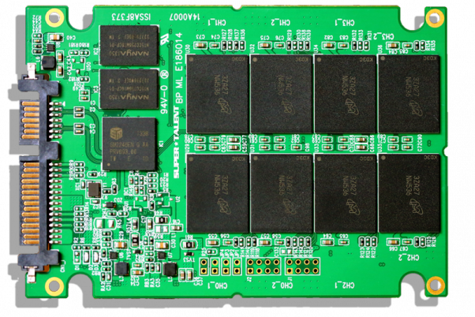
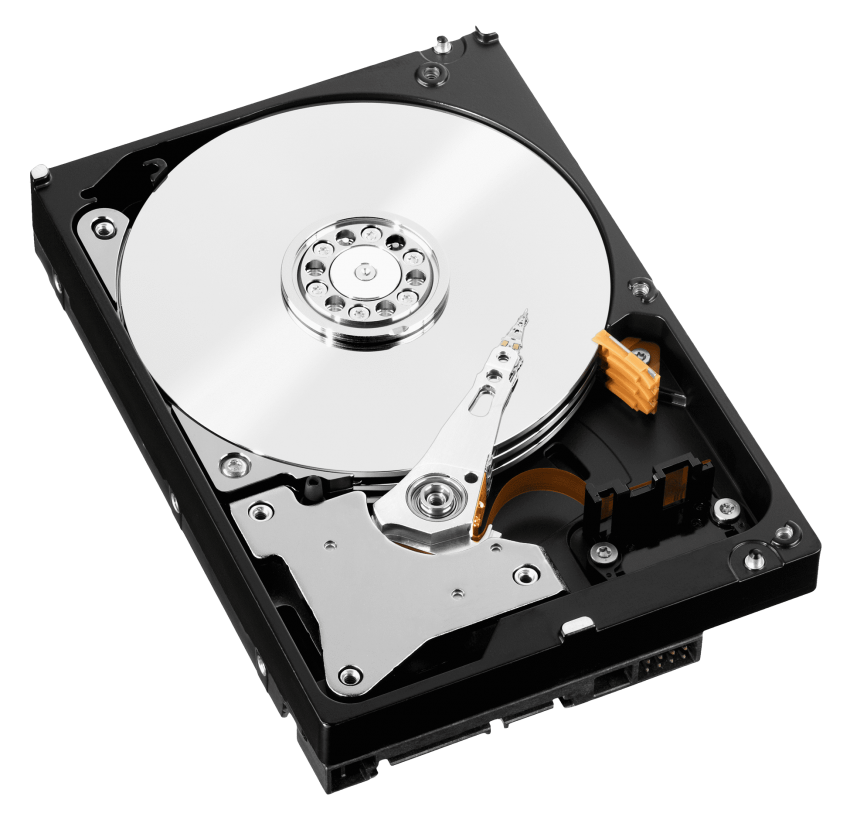

| Attribute |
SSD (Solid State Drive) |
HDD (Hard Disk Drive) |
| Definition |
a storage device containing nonvolatile flash memory, used in place of a hard disk because of its much greater speed. |
a non-volatile computer storage device containing magnetic disks or platters rotating at high speeds. |
| Size |
2.5-inch and 3.5-inch. These sizes refer to the size of the data platters, not the size of the hard drive mechanism. Traditionally, 2.5-inch drives are used for laptops while 3.5-inch drives are used for desktop computers. |
as 5.25-inch, 3.5-inch, 2.5-inch or 1.8-inch. The largest size, 5.25-inch, is not widely used, except for special-purpose appliances, such as backup devices. |
| Advantage |
Faster than hard disk drives, Low power consumption, Durable than hard disk drives, No noise while in operation |
More affordable than SSD, Higher storage capacity than SSD, HDD is easier to buy in most stores |
| Disadvantage |
No noise while in operation, Limited storage capacity, Poor availability |
HDD is slower than SSD, Higher power consumption, Produces noise while in operation |
| Power Draw / Battery Life |
Less power draw, averages 2 – 3 watts, resulting in 30+ minute battery boost |
More power draw, averages 6 – 7 watts and therefore uses more battery |
| Cost |
Expensive, roughly $0.20 per gigabyte (based on buying a 1TB drive) |
Only around $0.03 per gigabyte, very cheap (buying a 4TB model) |
| Capasity |
Typically not larger than 1TB for notebook size drives; 4TB max for desktops |
Typically around 500GB and 2TB maximum for notebook size drives; 10TB max for desktops |
| Operating System Boot Time |
Around 10-13 seconds average bootup time |
Around 30-40 seconds average bootup time |
| Noise |
There are no moving parts and as such no sound |
Audible clicks and spinning can be heard |
| Vibration |
No vibration as there are no moving parts |
The spinning of the platters can sometimes result in vibration |
| Head Produced |
Lower power draw and no moving parts so little heat is produced |
HDD doesn’t produce much heat, but it will have a measurable amount more heat than an SSD due to moving parts and higher power draw |
| Failure Rate |
Mean time between failure rate of 2.0 million hours |
Mean time between failure rate of 1.5 million hours |
| File Copy / Write Speed |
Generally above 200 MB/s and up to 550 MB/s for cutting edge drives |
The range can be anywhere from 50 – 120MB / |
| Encryption |
Full Disk Encryption (FDE) Supported on some models |
Full Disk Encryption (FDE) Supported on some models |
| File Opening Speed |
Up to 30% faster than HDD |
Slower than SSD |
| Magnetims Affected |
An SSD is safe from any effects of magnetism |
Magnets can erase data |
| Picture |
 |
 |